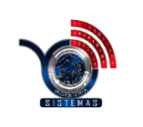

UNIVERSIDAD AUTÓNOMA “TOMÁS FRÍAS”INGENIERÍA DE SISTEMAS |
 |
||||
| ESTUDIANTE: | Valery Estela Ayllon Campero | ||||
| DOCENTE: | Ing. Choque Matos Javier | MATERIA: | SIS-313 G1 | ||
| AUXILIAR: | Univ. Alex Sander Lopez Orcko | FECHA: | 17/09/2026 | PRÁCTICA N. 2 | |
PRÁCTICA N2 – GIT, GITHUB Y HTML |
|||||
Respuesta: Git es un sistema de control de versiones distribuido. Su función principal es registrar y administrar los cambios realizados en el código fuente a lo largo del tiempo, permitiendo revertir estados anteriores, llevar un historial detallado y trabajar colaborativamente sin sobrescribir el trabajo de otros.
Respuesta: Git es la herramienta de software local que gestiona el historial y control de versiones en tu computadora. GitHub es una plataforma en la nube que aloja repositorios de Git, permitiendo respaldar el proyecto en línea y colaborar de forma remota con otros desarrolladores.
Respuesta:
git status (opcional): Verifica los archivos modificados.git add . (o el nombre del archivo): Añade los cambios al área de preparación (Staging Area).git commit -m "Mensaje descriptivo": Guarda la captura/estado de los cambios con un mensaje explicativo.Respuesta:
git remote add origin <URL_DEL_REPOSITORIO>: Vincula el repositorio local con el repositorio remoto de GitHub asignándole el nombre alias "origin".git branch -M main: Renombra la rama principal a "main" asegurando compatibilidad con el estándar actual.git push -u origin main: Sube la rama local "main" y sus commits al servidor remoto "origin", estableciendo el enlace predeterminado para futuros empujes.Respuesta: Una rama es una línea independiente de desarrollo dentro del proyecto. Es útil para desarrollar nuevas funcionalidades, corregir errores o experimentar con código sin alterar la versión estable que se encuentra en la rama principal (main).
Respuesta:
git checkout -b mi-nueva-rama (o git switch -c mi-nueva-rama).git add . y luego git commit -m "Nuevos cambios".git push origin mi-nueva-rama.Respuesta: Un conflicto ocurre cuando Git no puede combinar automáticamente dos ramas porque se realizaron modificaciones distintas en la misma línea de un mismo archivo. Para resolverlo se siguen estos pasos:
git merge nombre-rama).<<<<<<<, =======, >>>>>>>).git add .git commit -m "Resolución de conflictos".Este es mi horario de la gestión 2026 semestre 2 =D